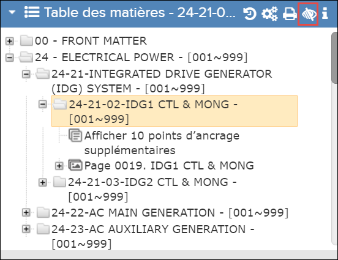
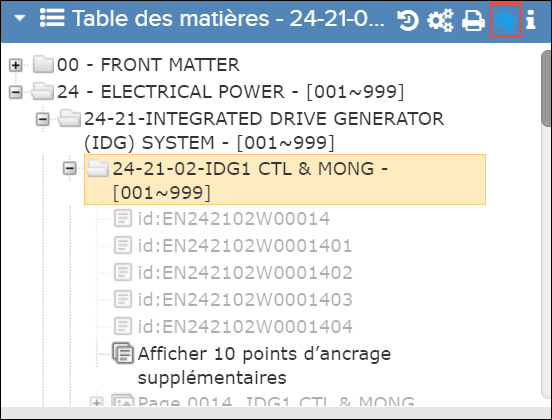

Lors de l'affichage d'une publication pour laquelle le filtre d'efficacité est
appliqué, l'utilisateur peut choisir d'afficher ou de masquer le contenu non efficace à l'aide
de cette fonctionnalité.
Lorsque la bascule
Afficher/Masquer le contenu
filtré est inactive, le contenu non efficace est masqué dans le volet Table des
matières.

Contenu filtré masqué
La bascule
Afficher/Masquer le contenu filtré est
surlignée en bleu lorsqu'elle est active et le contenu non efficace est visible sous forme
de texte grisé.

Afficher le contenu filtré sous forme de texte gris
Remarque : L'état initial de la bascule Afficher/Masquer le contenu filtré est
configurable. Référez-vous à . Flatirons Pinpoint Configuration Guide, “Configure
Show/Hide Filtered Content” section.
Remarque : Cette fonctionnalité n'est disponible
qu'après avoir sélectionné un ou plusieurs produits pour le filtrage de
contenu.